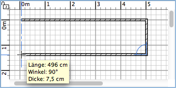

|
|
W�nde zeichnen | ||
|
Um W�nde zu zeichnen, m�ssen Sie zun�chst Plan > Wand erstellen oder das Wand erstellen-Werkzeug benutzen.
Klicken Sie im Wohnungsplan an den Startpunkt an dem die neue Wand entstehen soll.
Dann klicken oder doppelklicken Sie an die Stelle im Wohnungsplan, wo sie enden soll.
So lange Sie nicht doppelklicken oder die Escape-Taste dr�cken, beendet jeder weitere
Klick die eben gezeichnete Wand und beginnt eine neue am Ende der alten. W�hrend Sie
eine Reihe W�nde einzeichnen, wird der Startpunkt der neuen Wand an eine bestehende
angeh�ngt, wenn Sie auf den Start- oder Endpunkt der bestehenden Wand klicken. Die
letzte Wand wird an eine bestehende angeh�ngt, indem Sie an deren Start- oder Endpunkt
doppelt klicken. Wenn Sie die Strg-Taste (Alt unter macOs) gedr�ckt
halten, w�hrend Sie den Endpunkt einer Wand anklicken, wird eine runde Wand erzeugt,
deren Bogenwinkel von dem Punkt abh�ngen wird, an dem Sie zum dritten Mal klicken.
 Um das Einzeichnen von W�nden zu beenden, klicken Sie in Plan > Ausw�hlen oder w�hlen das Ausw�hlen-Werkzeug (oder ein beliebiges anderes Werkzeug).
|
|